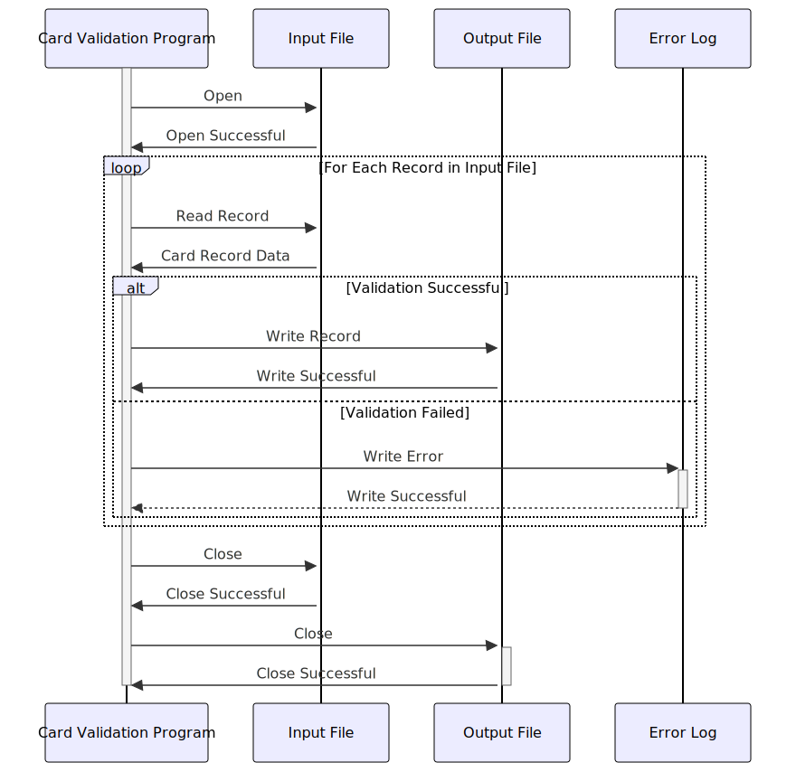

Gerado em: 1 de outubro de 2024
Título do Documento: Programa de Validação e Processamento de Dados de Cartão
Descrição Resumida:
Este programa valida dados de cartão de crédito de um arquivo de entrada e grava registros válidos em um arquivo de saída. Ele desempenha um papel crucial na garantia da integridade dos dados para processos downstream, como processamento de transações, geração de relatórios e gerenciamento de contas.
Histórias do Usuário:
Como analista de dados, preciso garantir que apenas registros válidos de cartão de crédito sejam usados para análise e geração de relatórios, a fim de manter a precisão e a confiabilidade dos dados.
Épico Relacionado:
3 - Gerenciamento de Cartão de Crédito
Requisitos Funcionais:
- Ler Dados do Cartão: O programa deve ler os registros do cartão de crédito de um arquivo de entrada.
- Validar Número do Cartão: Validar o número do cartão com base em regras predefinidas (por exemplo, comprimento, algoritmo de Luhn).
- Validar Data de Validade: Verificar se o cartão não está expirado com base na data atual.
- Validar Status Ativo: Verificar se o cartão está marcado como ativo.
- Lidar com Registros Inválidos: Se um registro falhar na validação, registrar os detalhes do erro (por exemplo, motivo da falha, detalhes do registro) em um log de erros.
- Gravar Registros Válidos: Gravar registros de cartão validados em um arquivo de saída para processamento posterior.
Requisitos Não Funcionais:
- Desempenho: O programa deve processar um grande volume de registros de cartão de forma eficiente dentro de um prazo aceitável.
- Confiabilidade: O programa deve operar de forma confiável, sem erros ou corrupção de dados.
- Manutenibilidade: O código do programa deve ser bem estruturado, documentado e fácil de entender para futuras modificações ou aprimoramentos.
- Segurança: O programa deve lidar com dados confidenciais do cartão de forma segura e cumprir as regulamentações relevantes de proteção de dados (por exemplo, PCI DSS).
Critérios de Aceitação:
- O programa lê e valida com sucesso os dados do cartão de crédito do arquivo de entrada.
- Os registros inválidos são identificados, registrados com detalhes específicos do erro e excluídos do arquivo de saída.
- Os registros de cartão válidos são gravados corretamente no arquivo de saída no formato esperado.
- O programa lida com erros normalmente, registra informações relevantes para solução de problemas e fornece mensagens de erro claras ao usuário.
- O programa atende aos requisitos de desempenho definidos, processando registros dentro do prazo aceitável.
Melhorias de Código:
- Implementar um mecanismo de tratamento de erros mais robusto para capturar e lidar com várias exceções (por exemplo, arquivo não encontrado, formato de dados inválido).
- Adicionar registro para operações bem-sucedidas e marcos importantes no fluxo de processamento para facilitar o monitoramento e a solução de problemas.
- Otimizar a lógica de validação para melhorar o desempenho, especialmente ao lidar com um grande volume de registros.
- Considerar o uso de uma biblioteca ou estrutura de validação de dados para simplificar e padronizar as regras de validação.
Melhorias de Segurança:
- Implementar controles de acesso apropriados para restringir o acesso não autorizado ao programa, arquivo de entrada, arquivo de saída e logs de erros.
- Criptografar dados confidenciais do cartão durante o processamento e armazenamento para protegê-los contra acesso não autorizado.
- Registrar todas as tentativas de acesso a dados, incluindo IDs de usuário e carimbos de data/hora, para fins de auditoria e monitoramento de segurança.
- Revisar e atualizar regularmente as medidas de segurança para lidar com novas vulnerabilidades e ameaças.
Diagrama Conceitual:

–Made by “Smart Engineering” (by Compass.UOL)–